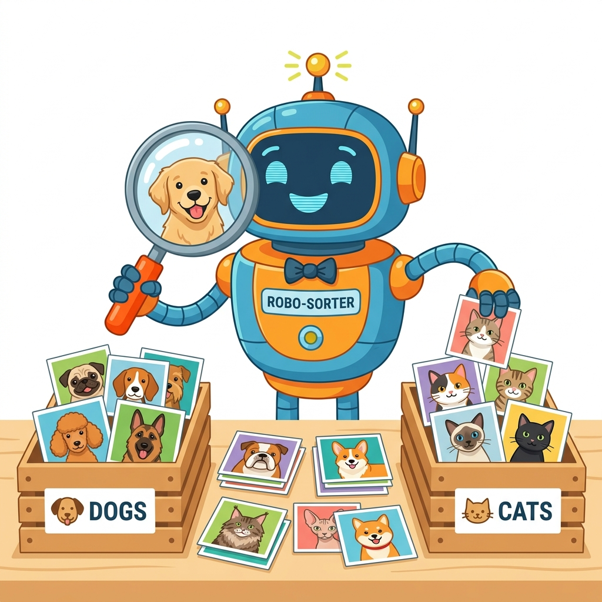

In classical programming, we write hardcoded rules by hand. In real Machine Learning using industry libraries like scikit-learn (sklearn), we feed data into an actual classifier model!
While Supervised Learning requires labelled answers ($y$), Unsupervised Learning uses algorithms like sklearn.cluster.KMeans to discover hidden clusters in unlabelled data automatically!
When input features have vastly different scales (e.g. Weight in grams vs Height in feet), large numbers distort distance metrics. We use Scikit-Learn's MinMaxScaler to scale all values between 0.0 and 1.0!
The KNeighborsClassifier classifies new items by examining the $K$ closest training samples in feature space using Euclidean distance.
We use sklearn.model_selection.train_test_split to automatically shuffle and partition our dataset into training and testing subsets.